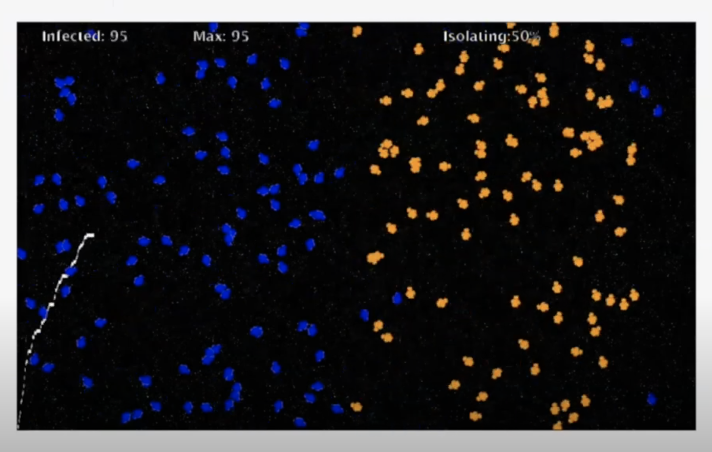

My Projects!
(In order from most recent to least)
Electron Affinity Game Project
Course: AP Computer Science Applications
Duration: Three Weeks (November, 20 2020 - December, 10 2020)
Objective: The goal of this project was to design and build an educational game using Java on Greenfoot. The objective is to combine AP Computer Science Application course princioples with applications.
Type of Project: Group Project (four people)
My primary role in the development of the Exciting Electrons! game was working on ensuring that the Bohr model presented itself accurately when the user was prompted to move on to a different model. In a Bohr model with two shells, there can exist up to 10 electrons total (2 core and 2 valence), but for realistic purposes (a full valence shell is extremely difficult to remove an electron from), our Bohr models in the game only used 9 electrons total (including core and valence electrons). One of the main challenges faced throughout my design process was after our team realized that the core electrons were also getting removed by the photon if it landed on the inner shell after our first iteration. This is extremely unrealistic, considering the educational standard that our game is held by. Thus, I separated the core electrons and valence electrons into different classes, when they used to all be in the same class. Therefore, I solved this problem by instantiating the core electrons separately from the valence electrons.
Click here to view the project rubric
Modeling a Virus Greenfoot Project
Course: AP Computer Science Applications
Duration: Two Weeks (July, 1 2020 - July, 20 2020)
Objective: The goal of this project was to design and build an educational environment using Java on Greenfoot. It should demonstrate an AP concept on Java programming. The objective of the model is to show how different percentages of people are social distancing will alter the curve of people are being infected.
My primary role in the development of the model for the virus was to build and expand on video tutorial that our class followed throughout the summer break. As a team, Ella and I wanted to make people who social distance not come in contact with others. Additionally, we wanted to model a second wave of the epidemic in which the population would gain more knowledge about the virus and take more precautions. At the end, what we accomplished was: Modeling how different percentages of people that are social distancing will alter the curve of people that are being infected. Additionally, modeling a realistic second wave of the epidemic means that naturally, as isolation regulations are slowly lifted, people who leave their homes will be more likely to take precautions, thus, this curve should look flatter than the first curve due to the limited/slower spread of the virus the second time around.

Click here to view the project code
Featured: Sign-In ASL App
Course: AP Computer Science Principles (For Entrepreneurship Showcase)
Duration: Two Weeks (May, 1 2020 - May, 20 2020)
Objective: The objective of this app is to connect the hearing and non-hearing communities by implementing machine learning and data science to translate cues in American Sign Language to English.
Type of Project: Group Project (three people)
*Entered in 2020 Entrepreneurship Showcase (won first place)
Throughout this project, I worked primarily on marketing, research as well as assisting in technical needs. To cater to our audiences, I coded a website explaining the mission of our app. During this project, my teammates and I worked asynchronously from our homes. We scheduled meetings to debrief over our needs and To-Dos. One of my additional responsibilities on this project was to write the script and produce our video to advertise our product. Due to the fact that this was a project that we planned on submitting into the Entrepreneurship Showcase. One of the main challenges of this project was coordination and time management. Once again, due to the virtual nature of the project, as well as the fact that many of my teammates had personal responsibilities to attend to, it was often difficult setting up meeting times and space. In addition to marketing, research and technical needs, I also contributed to the final documentation of the project.
Click here to view the showcase presentation
Click here to view the judge's feedback
Image Manipulation Project
Course: AP Computer Science Principles
Duration: Two Weeks (March, 23 2020 - March, 31 2020)
Objective: The goal of this project is to use Python to manipulate images and edit them and to use image manipulation to convey a message and solve a problem. This project demonstrates knowledge on algorithms in Python.
Type of Project: Partner Project (two people)
This is by far one of my favorite projects of the year. This project was inspired by abstract artists, and my partner and I created two different options in total, one inspired by Picasso and the other inspired by Kandinsky. Though it was challenging collaborating from home, I think it was overall an interesting experience. One of the first challenges I encountered throughout this project was applying images and shapes on top of the photo rather than using a mask to create a border. To solve this problem, I researched how to draw different geometric shapes in Python. There had to be a lot of communication between my partner and I because we had to make sure neither one of us was deleting something that the other person was working on. To combat this, we created many different versions and test files, and clearly labeled them in the workspace to not cause conflict. We tested code on our individual test files and combined them onto the main file after finding the solution. The freedom of this assignment and abundance of time due to shelter in place allowed me to explore and experiment with code that we didn't cover in class. I researched color manipulation and edited the images to reduce or increase saturation.


Click here to view the project rubric
Scratch Project
Course: AP Computer Science Principles
Duration: One Week (September, 3 2019 - September, 11 2019)
Objective: The goal of this project is to design and develop an interactive game on Scratch using block code. In this Platformer the user can fundamentally control what happens using the keyboard or mouse and includes multiple states as well as an overall objective.
Type of Project: Partner Project (two people)
Throughout this project, one important aspect of the creative process was the ability to collaborate and combine ideas when working with a partner. During our brainstorming session, I thought that it would be more productive to include every single idea, and not to dismiss any of them until there was a clear reason to do so in the end. This helped my partner and I stay open-minded and aware of all our different options. What I found most useful is to encourage effective communication while working in my team. This helped us navigate challenges and difficulties such as scheduling, planning, code errors and more. In this project, my responsibilities included the part of the code and comments, which was done using pair coding. One of the main challenges my partner and I faced during our process was figuring out how to incorporate realistic physics into our game, since it was a platformer game. We resolved the issue by researching online and analyzing code that already exists. Then, we edited the code so that we could incorporate the same aspects into our version. Throughout the project, I contributed to the design and documentation of the game as well as maintained effective communication between both partners.

Click here to view the project rubric
Aerodynamic Design Project
Course: Honors Principles of Engineering
Duration: Two Weeks (January, 18 2019 - January, 24 2019)
Objective: The objective of this project was to understand which designs would produce projectiles that would fly the furthest given the following constraints. In order to accomplish this, we were tasked with designing, creating and testing two prototypes of rockets with the given materials, launched at a specific PSI with a chosen angle to evaluate its distance traveled.
Type of Project: Group Project (three people)
In this project, I overcame challenges in order to brainstorm effective designs that will be able to fly the furthest. Due to the fact that this project was largely individual based, I designed two different rockets with variations to the shape of the fin. In class, I finished building my first rocket in a day and spent the rest of the work time perfecting the design by testing it. My first rocket flew relatively far in comparison to the rest of my classmates. After the first launch, I noticed that thinner rockets that were wrapped tightly around the PVC pipe tended to fly further because its shape allows it to build up more pressure. One of the main challenges I faced during this project was contemplating how to make my rocket thinner without being too thin to fit around the pipe. I also needed to figure out how to make the tip of the rocket as small as possible so that it minimizes the air resistance. Overall, my responsibilities in this project were far greater than a typical group project in the class because I constructed two rocket prototypes and worked on the documentation for both designs.

Click here to view the project rubric
Solar Hydrogen Vehicle Project
Course: Honors Principles of Engineering
Duration: Two Weeks (November, 1 2018 - November, 16 2018)
Objective: The goal of this project is to design, build and test a prototype to gain the power and speed capabilities of using solar or hydrogen power.
Type of Project: Group Project (four people)
Type of Project: Partner Project (two people)
In this project, my group and I overcame challenges in order to build a fast and efficient vehicle. This vehicle needed to cover a distance of one meter over a short period of time using four different power configurations such as one hydrogen fuel cell, two hydrogen fuel cells, one solar cell and two solar cells. I contributed to the design of the project and created the chain and sprocket system that allowed for the car to move. I also built the casing that held each of the two hydrogen fuel cells. One of the main challenges include the spacing on the vehicle.We had to change our design in the middle of the project in order to fit all four power configurations onto the car. This meant that we needed to add a second story. The second level on the car comes with additional weight, therefore force was something we needed to consider and take into account. I contributed to the documentation, the modifications, initial design as well as the initial design paragraph. I also updated my individual notebook and inputted the group responsibilities in the gantt chart.


Click here to view the project rubric